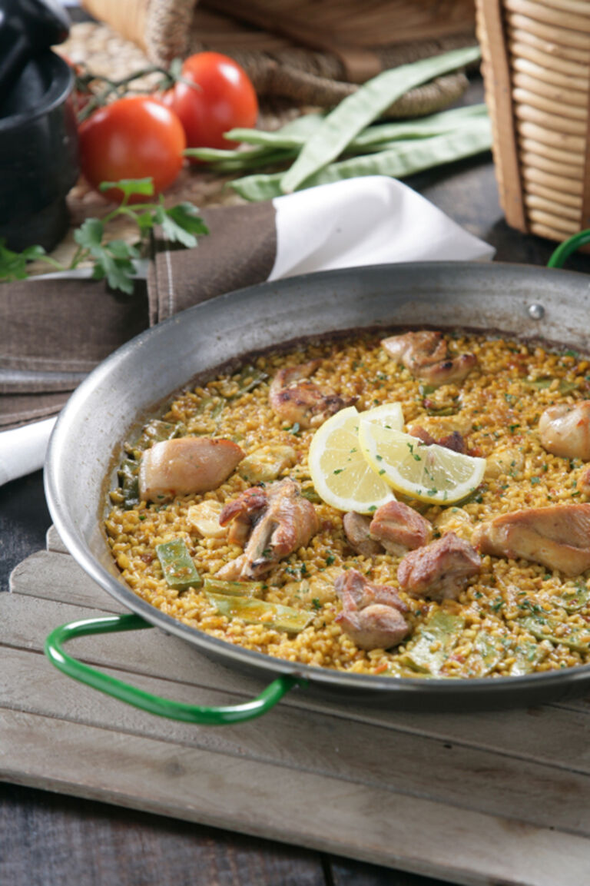

Paella

Descripción
Hay poca gente que no caiga rendida ante la paella valenciana. La Paella es probablemente la receta más aclamada,
popular y conocida de nuestra gastronomía. Se trata del plato insignia de toda una región, el cual ha permitido
que la riqueza culinaria española traspase fronteras.
Aprende a preparar la famosa paella valenciana y sigue nuestra receta paso a paso para que te quede perfecta.
Toma nota de los ingredientes y sigue paso a paso nuestra receta para preparar una autentica receta de paella.
Ingredientes
- 400 gramos de Arroz Bomba
- 1 Kg. de pollo troceado
- 500 gramos de conejo troceado
- 200 gramos de judías verdes
- 100 gramos de garrofó fresco
- 100 gramos de tomate troceado
- 6 cucharadas de aceite de oliva
- Unas hebras de azafrán
- Pimentón rojo molido
- Una ramita de romero
- Sal
Pasos
- Vierte el aceite sobre la paella y enciende el fuego. Una vez el aceite esté caliente, añade el conejo y el
pollo y sofríelos hasta que adquieran un color dorado.
- Recuerda darle vueltas a las piezas de carne para que se hagan uniformemente. A continuación, echa las
verduras y rehógalas.
- Ahora vierte el tomate rallado y sofríelo del mismo modo, removiendo constantemente.
- Ahora es el turno del pimentón. Añádelo y remuévelo apenas un instante, enseguida tienes que verter el agua
hasta los remaches de la paella para evitar que se queme. Añade el azafrán, el romero y la sal.
- Una vez que el agua rompa a hervir, déjala unos 5 minutos en ebullición con fuego vivo. A continuación, baja
a fuego medio y déjala cocer entre 20 y 30 minutos. Aviva el fuego y añade el arroz.
- La forma tradicional de ponerlo es haciendo una cruz en el agua que está hirviendo y repartirlo de modo
uniforme por la superficie del recipiente. Aprovecha ahora para probar y rectificar de sal.
- Mantén el fuego fuerte durante unos 10 minutos y reduce el fuego a la mitad durante un tiempo parecido hasta
que el arroz quede en su punto de cocción. ¡Buen provecho!
Volver arriba
Volver al índice